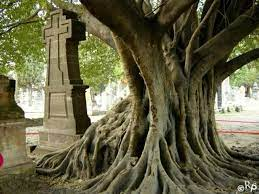

Hace muchos años, un extranjero proveniente de Europa llegó a un poblado de la zona de Guadalajara, México.
Era una persona extraña y reservada, pero su falta de interés en socializar con la gente de la región no era lo más inquietante.
De hecho, desde la llegada de este hombre misterioso, empezaron a aparecer primero cadáveres de animales, y luego cuerpos sin vida de niños, todos ellos desangrados.
Una noche, las gentes del poblado decidieron buscar al extranjero para enfrentarlo, asumiendo que él era el autor de los hechos.
Esa noche lo encontraron intentando morder a un lugareño, así que le clavaron una estaca de madera y luego sepultaron su cuerpo bajo una pila de ladrillos.
Años después un árbol creció de entre los ladrillos a partir de la estaca de madera, y se dice que al cortar sus ramas aparecen dentro del corte regueros de sangre, de las víctimas del vampiro de Guadalajara.